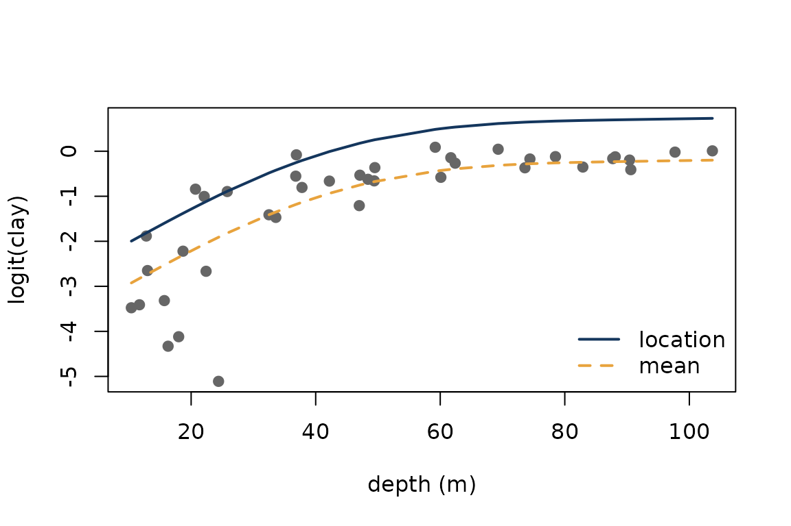

Getting started with snbr
snbr.RmdThe package fits regression models with skew-normal errors, \[ y_i = \mathbf{x}_i^\top\beta + \varepsilon_i,\qquad \varepsilon_i \sim \mathrm{SN}(0, \sigma, \alpha), \] and a partially linear version in which one covariate enters through a penalized B-spline. Four estimators are available: maximum likelihood, the corrective estimator that subtracts the Cox and Snell second-order bias, and the mean and median bias-reducing adjusted score estimators.
The Arctic lake data
The data set arcticlake gives the sand, silt and clay proportions of 39 sediment samples taken at different depths of an Arctic lake. We model the logit of the clay proportion as a quadratic function of depth, with depth expressed in hundreds of metres.
arcticlake$d <- arcticlake$depth / 100
fit_ml <- snreg(logit_clay ~ d + I(d^2), data = arcticlake, method = "ML")
fit_ml
#> Skew-normal regression, method: ML
#> (Intercept) d I(d^2) sigma alpha
#> -2.238 7.882 -5.512 1.403 -Inf
#> The maximum likelihood estimate of the shape is infinite.The maximum likelihood estimate of the shape is minus infinity. The decision is exact: sn_mle() compares the best finite value of the log-likelihood with its limit as \(\alpha \to \pm\infty\), which is the log-likelihood of a half-normal regression fitted by constrained least squares.
f <- sn_mle(cbind(1, arcticlake$d, arcticlake$d^2), arcticlake$logit_clay)
f$loglik_limit # limits as alpha -> -Inf and alpha -> +Inf
#> [1] -41.52189 -63.38143
f$finite
#> [1] FALSEThe corrective estimator needs a finite maximum likelihood estimate and is therefore not available. The adjusted score estimators are:
fit_mean <- snreg(logit_clay ~ d + I(d^2), data = arcticlake, method = "mean")
fit_med <- snreg(logit_clay ~ d + I(d^2), data = arcticlake, method = "median")
cbind(mean = coef(fit_mean), median = coef(fit_med))
#> mean median
#> (Intercept) -3.129901 -2.932829
#> d 10.206413 9.406195
#> I(d^2) -6.636632 -6.114078
#> sigma 1.253936 1.250251
#> alpha -2.053205 -2.797908
summary(fit_mean)
#> snreg(formula = logit_clay ~ d + I(d^2), data = arcticlake, method = "mean")
#> Method: mean
#>
#> Estimate Std. Error z value Pr(>|z|)
#> (Intercept) -3.12990 0.54691 -5.7229 1.047e-08 ***
#> d 10.20641 2.16072 4.7236 2.317e-06 ***
#> I(d^2) -6.63663 1.98462 -3.3440 0.0008257 ***
#> sigma 1.25394 0.25274
#> alpha -2.05320 1.29849 -1.5812 0.1138274
#> ---
#> Signif. codes: 0 '***' 0.001 '**' 0.01 '*' 0.05 '.' 0.1 ' ' 1
#>
#> Log-likelihood: -44.7253 (effective df 5 )A smooth effect of depth
The quadratic was chosen by the authors of the earlier analysis among a few alternatives. A penalized spline lets the data decide; the smoothing parameter is chosen by AIC with effective degrees of freedom.
fit_s <- snreg(logit_clay ~ 1, data = arcticlake, smooth = "d", method = "mean", k = 8)
fit_s
#> Skew-normal regression, method: mean
#> Smooth term in d (edf of the model 5.23 )
#> (Intercept) sigma alpha
#> -0.2518 1.2765 -2.2153
th <- coef(fit_s)
P <- length(th)
delta <- th[P] / sqrt(1 + th[P]^2)
loc <- fitted(fit_s)
avg <- loc + th[P - 1] * sqrt(2 / pi) * delta # E(y) = location + sigma * b * delta
o <- order(arcticlake$d)
plot(arcticlake$depth, arcticlake$logit_clay, pch = 19, col = "grey40",
ylim = range(c(arcticlake$logit_clay, loc)),
xlab = "depth (m)", ylab = "logit(clay)")
lines(arcticlake$depth[o], loc[o], lwd = 2, col = "#14365d")
lines(arcticlake$depth[o], avg[o], lwd = 2, lty = 2, col = "#e8a33d")
legend("bottomright", c("location", "mean"), lwd = 2, lty = c(1, 2),
col = c("#14365d", "#e8a33d"), bty = "n")
The solid line is the location \(\mathbf{x}_i^\top\beta + f(t_i)\) and the dashed line the mean. With a negative shape the errors are skewed to the left, so the location lies above the bulk of the data and the mean below it.
Second-order bias
sn_bias() evaluates the Cox and Snell bias at any parameter value; it is the ingredient of both the corrective and the mean bias-reducing estimators.